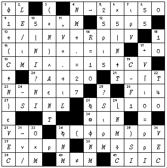
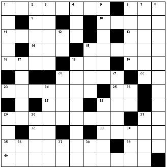

Zark News: Utility Corner and Crossword-5
Vector 15:3, page 22
Note:
The clues for the new crossword contain some APL characters. These are coded as APL2741 (available as a 45K download), and also with <CODE> tags. The mapping is compatible with both the APL2000 font and the current Dyalog font.
Solution to APL Crossword from 15.2¶

Crossword from 15.3¶

Across
1. The inverse of +/, i.e. the first difference of V
6. 1↓⌽↓'[(A)]'
9. 1⊥⍳4
10. Accept numeric input; call it NMV
11. Negate the vector MB and show its running total, LIFO (last in, first out ) basis
13. Given distinct values in A, return ⍳⍴A without using ⍴
14. Where T is found in V
15. (R⌶11)⍴11/V
16. The elements of V, capped at 99
18. 3↑'(0∊3↑V)'')'
19. SN is contained in...
20. The two row matrix YM of year and month numbers, converted to months since the year 0000, for date arithmetic
22. If SV represents Scalar left argument, Vector right argument, what combination can cause LENGTH ERROR for scalar functions?
23. (V⌶25)+(25⌶N>0)-(25⌶N<0)
25. The magnitude of K
27. Outer product product
28. The location of V’s first 9
31. Evaluated input as a vector
32. The opposite of +/ (silly)
33. For scalar MA, +/20⍴MA
35. 10 13 16 19 ... 34
39. The number of elements in any array V
40. (⍳5)∘.=(⍳5)
Down
1. The fractions used to spread a value, given relative weights in the vector V
2. ¯1↓(¯1↑V9),V9)
3. 9 8 7 6 ... 1
4. ~^/,B
5. One more than VN if any of Y are true
6. The system command for ⎕NL 2
7. Set A as the indices of the elements of the vector NV
8. The distinct values in the character vector V
12. A nice acronym for ⍳0
15. If N is 1 9 9 2, an expression that returns 1992
17. The values of the matrix M, rounded to the nearest integer
18. If VN=0, return ⍳0; but if VN is positive, return two elements of ...
20. The number of 1s in the vector ...
21. 10⍴⍳M, in origin 0
24. Add to EACH of the elements of V the numbers 1 to 5
26. Fido’s favourite variable name
28. The location in V of 27 and ...
29. (2/(2⍴(1⍴'()')))
30. Are there some elements in ...
31. The matrix M expressed as a vector, with a 0 after each row
34. ___A is true only if A is a nonscalar
36. 2*5
37. ¯2↑'⍎(⍳9)'
38. The most efficient expression that returns 1
Reprinted with kind permission from Zark APL Tutor News, a quarterly publication of Zark Incorporated, 23 Ketchbrook Lane, Ellington, CT06029, USA